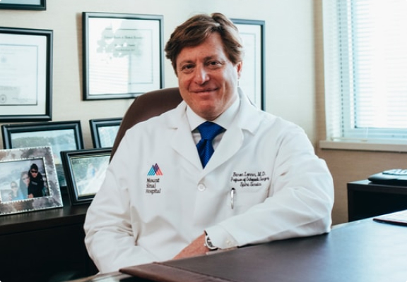

Артем Журавлев
Генеральный директор "Медтехсервис"
“Пусконаладочные работы, всестороннее изучение свойств получаемой продукции, доработка технологии потребовали чуть более полугода. В итоге все ступени производства были досконально изучены и оптимизированы, нам удалось добиться стабильно хороших результатов по каждой из характеристик. За счет компетенций сотрудников и применения инновационной технологии вкупе с современным оборудованием в части качества наша продукция встала в один ряд с мировыми производителями и даже превзошла ряд конкурентов. Получение лицензий на производство продукции от Росздравнадзора — это как взмах флажка на старте. Мы готовы к отгрузке первых поставок, к выходу на российский рынок, а в перспективе и на международный.”

Егор Поздняков
Директор по производству "Медтехсервис"
“Технология производства тест-полосок требует безукоризненной чистоты, даже небольшая ворсинка, попавшая на тест-полоску в ходе нанесения фермента, может привести к погрешности показаний. Отдельная вентиляционная система поддерживает определенный микроклимат в каждом из помещений завода – будь то комната контроля качества или лаборатория. Соблюдение заданных параметров по влажности, температуре и прочим характеристикам работает на обеспечение высокоточного качества выпускаемой продукции. Принципиальное отличие нашей технологии в применении не золотого напыления, к которому прибегают ведущие европейские компании, а карбонового. Более современного, экономически выгодного. Еще одна особенность — применение уникального ферментного раствора, который наши специалисты получают здесь же, в лаборатории.”